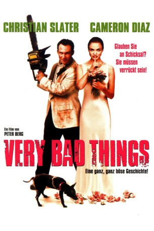
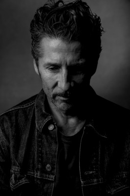
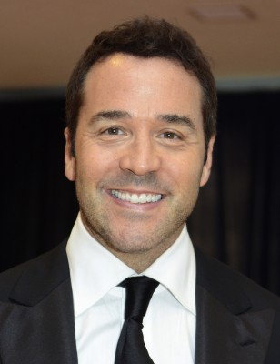
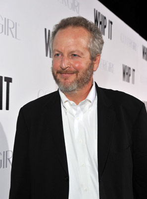
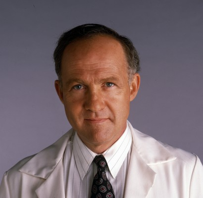

#3594 Very Bad Things
 gesehen am 11.05.2016
gesehen am 11.05.2016
 
 IMDB-Wertung: 6.3 / 10
IMDB-Wertung: 6.3 / 10  Metascore: 0
Metascore: 0 
Nur noch wenige Tage bis zur Hochzeit von Kyle und Laura. Während geradezu obsessiv auch noch das letzte Detail plant, fährt er mit seinen vier Freunden für einen Abend nach Las Vegas für die Junggesellenparty. Es geht hoch her und Drogen und Alkohol gibt es zuhauf. Nach dem Auftritt einer Stripperin hat Michael jedoch noch Sex mit der Frau, wobei es einen Unfall gibt und das Mädchen einen blutigen Tod stirbt. Als sich die Verzweifelten schließlich auf Beharren Boyds entscheiden, sie in der Wüste zu verscharren, kommt ihnen der Sicherheitsdienst dazwischen und bald haben sie zwei Leichen vor sich. Doch auch nach der Entledigung läßt das Geschehene die Männer nicht los. Vor allem Adam, Michaels Bruder dreht vor Schuldgefühlen fast durch. Schließlich steigert sich der Druck und die Schuld ins Unerträgliche und je näher die Hochzeit rückt, desto mehr Leichen tauchen auf...
Jahr: 1998
Dauer: 100 Minuten
FSK: 18
Land: USA Studio: Polygram FilmsTonspuren: DTS - ,
Untertitel:
Auflösung: 1080p (1920x1024) Größe: 7280 MB
Genre: Thriller, Komödie, Krimi
Regisseur:  Peter Berg
Peter Berg
Drehbuch: Merriwether Williams
Soundtrack:
Darsteller:
 Jon Favreau als Kyle Fisher
Jon Favreau als Kyle Fisher-  Leland Orser als Charles Moore
 Cameron Diaz als Laura Garrety
Cameron Diaz als Laura Garrety Christian Slater als Robert Boyd
Christian Slater als Robert Boyd- Rob Brownstein als Man
-  Jeremy Piven als Michael Berkow
-  Daniel Stern als Adam Berkow
- Jeanne Tripplehorn als Lois Berkow
- Joey Zimmerman als Adam Berkow Jr.
- Pancho Demmings als Cop
- Blake Gibbons als Suit
-  Lawrence Pressman als Mr. Fisher
- Bob Bancroft als Barry Morris
- Marilyn McIntyre als Judge Tower
- Brian Sampson als Wedding Videographer , uncredited
- Tyler Cole Malinger als Timmy Berkow
- Kobe Tai als Tina
- Russell B. McKenzie als Security Guard
- Angelo Di Mascio Jr. als Clerk
- Steve Fitchpatrick als Cop at Hospital
- Brian Grandison als Doctor #1
- John Cappon als Doctor #2
- Linda Klein als Doctor #3
- Byrne Piven als Rabbi
- Trey Davis als Receptionist
- Wrangler als Bunker the Dog 4 Legs
- Trooper als Bunker the Dog 3 Legs
Datei: X:\FSK18-1900-1999\Very Bad Things (1998, FSK18, 1920x1024).mkv seit 07.05.2016
Festplatte: FSK18
 Es gibt insgesamt 108 Filme in der Gruppe 'FSK18-1900-1999'
Es gibt insgesamt 108 Filme in der Gruppe 'FSK18-1900-1999'